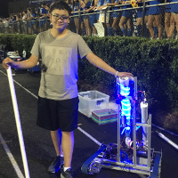

South Forsyth HS and the Forsyth Alliance will host one of the largest First Lego League tournaments in the state of Georgia in December. Team members volunteer as judges, help with registration, set up and break down of the facility and runners for the teams. The team is responsible for assembly of the game pieces. South Forsyth mentors one of these teams to help with programming and robot design.
Robotics was promoted through the school with a t-shirt cannon that was brought to home football games. T-shirts were fired with messages that promoted robotics and encouraged students to come and participate with technology.
Our school also hosts a summer camp for robotics. South Forsyth HS and its sister school, Lambert HS, jointly hosted a robotics camp in June 2016. An open invitation was extended to all elementary schools in the southern area of the county. 33 campers and 15 high school volunteers participated. Campers were given a mission to build and program VEX IQ robots over the course of the week.